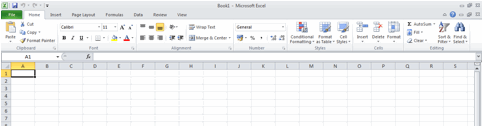
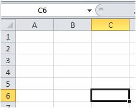
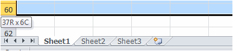
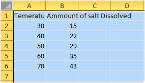
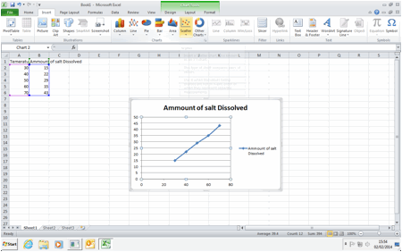
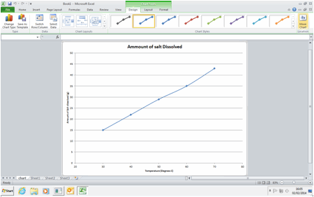
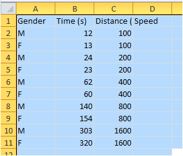

Ash Manor School
Computing Department
Spreadsheets
Spreadsheets are usefull for calculating several things at a time. They are particularly good at generating sense out of complicated situations using numbers. however care needs to be taken when using a spreadsheet. In particular often you need to remember that you are the boss, and the computer does as you tell it.
Aims
This is an introduction to Spreadsheets.
By the end of this unit you will learn:
- Why spreadsheets are used
- How a spreadsheet can be used to create a table
- How spreadsheets can be used to perform many calculations at once
- How to create simple, but effective charts using a spreadsheet.
- When to use a spreadsheet in lessons.
Activity 1
Visual Literacy exercise.
Learning aims:
- To be able to recognize control metaphors.
- To learn key terms relating to spreadsheets.
- Key words to help you with this exercise:
- Row,
- Column,
- Tab,
- Bar,
- Cell,
- Function.
>Find out and write down the meanings of each of the key words in a new word document.
Firstly open Microsoft Excel.
Looking at the blank spreadsheet in front of you answer the following questions:
What options are are available under the file menu in excel?
Are there any that are different from the file menu in a blank Microsoft Word document?
"C6" represents the location of the current cell.
What does the "C" represent?
What does the "6"represent?
Look at this bar.
What is it called? (hint hover your mouse over the selector at the end and it will tell you)
What does the button do?
What is the name of the the three things at the bottom of the sheet?
Activity 2
The science experiment - Guided learning activity.
Learning aim:
To be able to create various types of graphs of sufficient quality for use in other learning areas.
Alison was conducting a science experiment to find out how temperature affected the amount of salt that would dissolve in 100 ml of water.
She recorded her results in a table like this.
| Temperature (C) | Amount of salt dissolved |
|---|---|
| 30 | 15g |
| 40 | 22g |
| 50 | 29g |
| 60 | 35g |
| 70 | 43g |
Where did Alison write the units for her independant variable (the Temperature)?
Where did Alison write the units for her dependant variable?
Which column shows the better way of recording the units used? Explain why?
Open up a spreadsheet and record Alison´s Results.
Your spreadsheet should look like this.
Select the insert tab, and highlight your data.

We are going to start by making a scatter graph.
This can be done by clicking the scatter graph in the ribbon once your data has been set up.
You are now going to make this scatter graph look great by doing the following. (hint everything for this is now in the chart options (highlighted green in the ribbon))
Removing the legend (you don´t need a legend when you only have one line.)
Label the axes (Temperature (degrees C)) and (amount of salt dissolved (g))
Change the temperature axis so that it only goes down to 20.
Make the chart appear, in its own tab.
Your chart should look like this at the end;
Make a pie chart, a bar chart and a column hart for Alisons data.
Copy and paste all of your charts, into a word document, size them appropriately so that they take up no more than half the page width. Then for each chart explain whether it is an appropriate graphic for the results of not, and explain why.
Upload the word document with your answers on.
Activity 3
Running.
Another group of students did a PE practical.
Learning aim
To be able to use simple formulae in a spreadsheet.
They looked up the winners of last years running competitions and plotted their winners times
Using the times given here, find out the speeds they were running at. and the average running speed in meters per second for all the winners.
You may find the following formula helpful;
distance = speed * time.
Questions
Which symbol is always used to start an equation in a spreadsheet function?
What is the symbol used in a spreadsheet function for finding the sum of two numbers?
What is the symbol used in a spreadsheet function for finding the difference between two numbers?
What is the symbol used in a spreadsheet function for finding the product of two numbers?
What is the symbol used in a spreadsheet for finding the quotient of two numbers?
What is thesymbol used in a spreadsheet for raising a number to an index?
Which of the above symbols are the same as you use in Maths lessons and which are different?
Is the average speed of all the runners a helpful statistic?
Upload your spreadsheet, and a word document with your answers on.
Activity 4
Learning aims:
Use of built in formulae:
- Sum
- Average
- Median
- Max
- Min
Task
You have just performed a survey of heights and weights of people in your year 9 class. Here are the results
This task uses the body mass index property. Find out more about body mass index here, or ask your PE or Biology teachers.
| Name | Height (cm) | Weight (kg) |
|---|---|---|
| A | 172 | 94 |
| B | 176 | 95 |
| C | 171 | 94 |
| D | 184 | 100 |
| E | 183 | 96 |
| F | 162 | 95 |
| G | 168 | 83 |
| H | 170 | 87 |
| I | 169 | 72 |
| K | 146 | 64 |
| L | 152 | 64 |
| M | 192 | 98 |
| N | 186 | 98 |
| O | 173 | 93 |
| P | 167 | 83 |
Instructions
- Enter the data into a spreadsheet.
- Create an extra column. Entitle it "Body mass index"
- The algorithm for working out a persons body mass index is:
- Square their height in m
- Divide their weight in kg by the previous answer
- Return the answer to the previous step as their body mass index
- Change the algorithm into a formula and work out the body mass index for each person in the table
- Create an empty column to the left of your table. Insert the titles "Sum", "Average", "Median" "Max", "Min" in these cells.
- Use the "fx" button to insert the relevant functions in the table under your data
Activity 5
Budget activity
Learning aim:
To be able to set up a simple budget table in Excel.
Task
Home Alone!
The adults is your home have decided that they are going on an expensive holiday to Australia next week. Unfortunately its so expensive they have decided to cut unnecessary costs. You fall into this category! Before they go they are going to take you shopping to buy anything you need to get through the week without them. By take you shopping they mean, you order it online, you have a budget of £50 to last the week.
You are to prepare a menu for the week (Saturday morning to next saturday evening, just in case the plane is late). Then prepare a budget for your menu. Use prices from online shopping sites such as tesco online, do not actualy buy anything. You should prepare your menu on a word document. Rememeber to include breakfast, lunch and dinner. (Imagine its school holidays).
The headings for your budget spreadsheet should include
- Item - the name if the item you want
- Supplier - The shop you are buying it from
- Unit cost - the cost for one item
- Quantity - the number of items you want
- item cost - enter a formula for this, multiply the unit cost and quantity
At the ned you need to sum the item cost column, this will be your total cost
Activity 6 (Extension)
Learning aim:
To be able to use advanced built-in formulae: